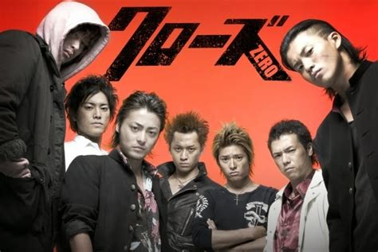
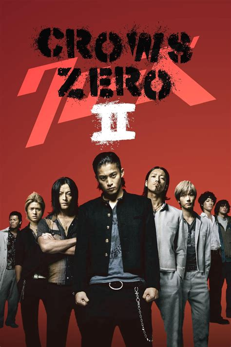
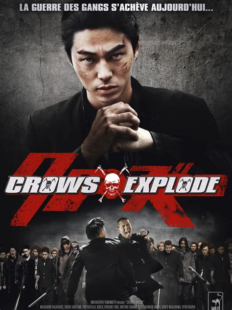

CROW ZERO I
Crow zero ialah sebuah film aksi yang berasal dari nergara jepang yang diangkat dari manga berjudul 'Crows' karya Hiroshi Takahashi.
Takiya Genji adalah siswa kelas tiga yang baru saja pindah ke sekolah khusus pria suzuran. Saat masuknya bertepatan dengan masa orientasi siswa kelas satu
Selama orientasi siswa baru, yakuza datang ke sekolah tersebut untuk melakukan pembalasan dendam pada siswa kelas tiga Tamao serizawa karena sudah menyerang beberapa anggota.

CROW ZERO II
Untuk menjadi penguasa SMA Suzuran genji harus mengalahkan Tamao serizawa. Awalnya genji kesulitan untuk mengalahkan pasukan serizawa
namun seiring berjalannya waktu, genji berhasil mengumpulkan pasukan dan mengalahkan serizawa. Melanjutkan film pertamanya, Crow Zero 2 bercerita tentang Takiya Genji yang tanpa sengaja merusak perjanjian damai dengan SMA Housen.
Genji yang notabene adalah murid pindahan dan menjadi penguasa baru di Suzuran tidak mengetahui soal perjanjian damai tersebut.
Perjanjian damai tersebut dibuat setelah insiden berdarah yang melibatkan pemimpin lama atau alumni SMA Suzuran dan Housen.

CROW ZERO III
Film Crows Explod/3 ini masih bercerita tentang murid - murid SMA Suzuran yang bercita - cita untuk menguasai sekolah tersebut. Kali ini cerita akan berputar disekitar Kaburagi Kazeo murid kelas tiga yang pindah sekolah ke suzuran dan murid kelas satu bernama Ryohei Kagami yang ingin menjadi terkuat di Suzuran.
Cerita bermula sebulan setelah kelulusan Takiya Genji, Yaitu pemeran utama Kaburagi Kazeo yang dimana sebenarnya ia tidak berminat menjadi pemimpin Suzuran
tetapi tidak sengaja ia menjadi pemimpin karena pemukulan terhadap anak baru yang kaya dan bengal.
CRAZY LOVE
Film ini berkisah tentang masa SMA 5 orang anak yang melewati berbagai kisah bersama
antara masalah percintaan hingga dengan permasalahan dengan para guru, dengan ending yang hampir sad ending namun
plotwist yang tak terduga menjadikan para penikmatnya deg-degan. Dan di ending akhirnya pemeran utama kumbang dan oliv bersatu

THE WARRIOR
Film ini berkisah tentang sebuah geng bernama The Warrior yang terbentuk untuk membunuh
pemimpin geng yang mencoba menyatukan semua geng di daerahnya. Bersama geng lain memacu
mereka untuk merebut kembali kehidupannya di Coney Island.